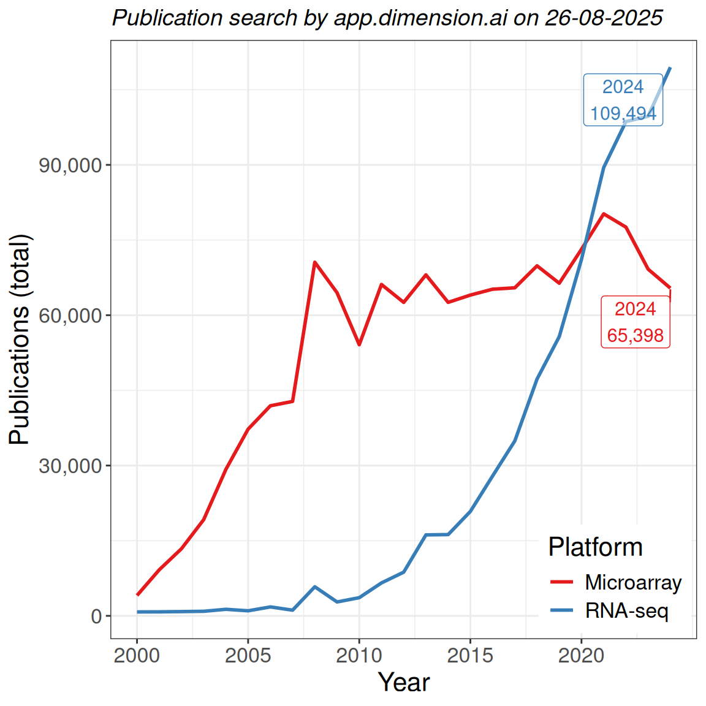
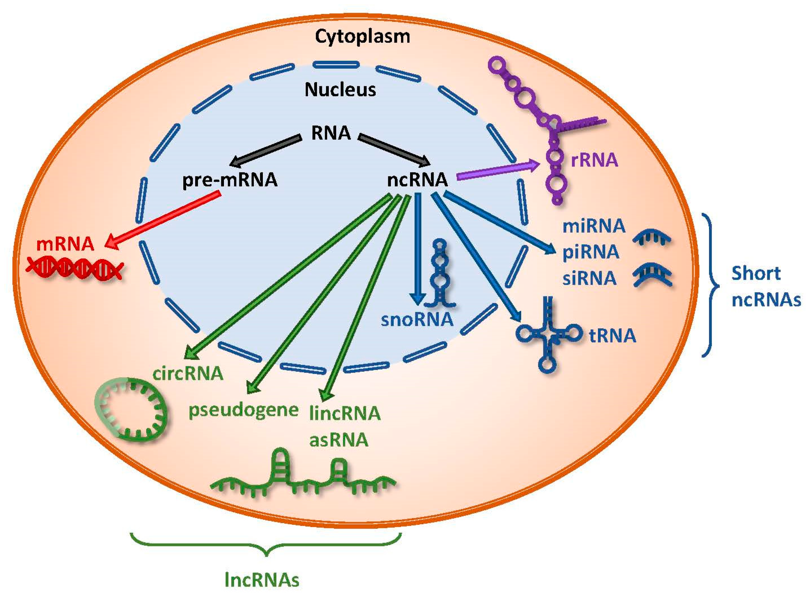
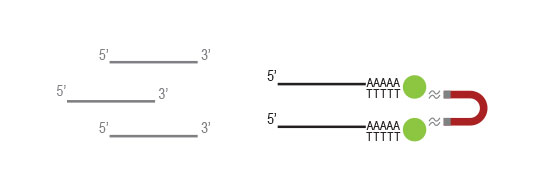
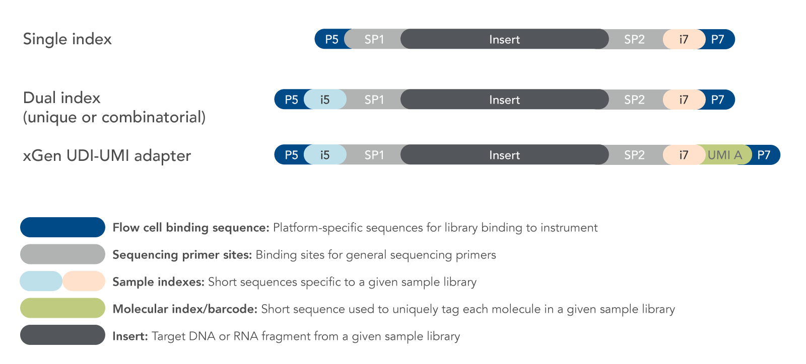
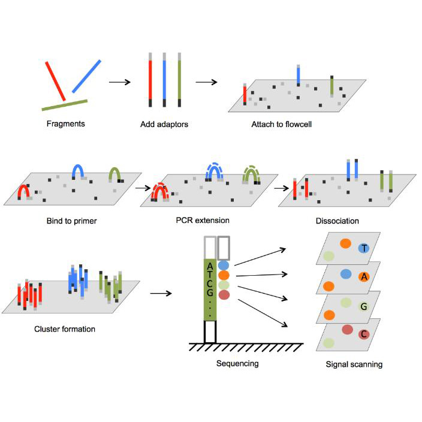
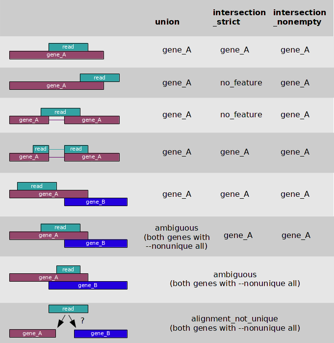
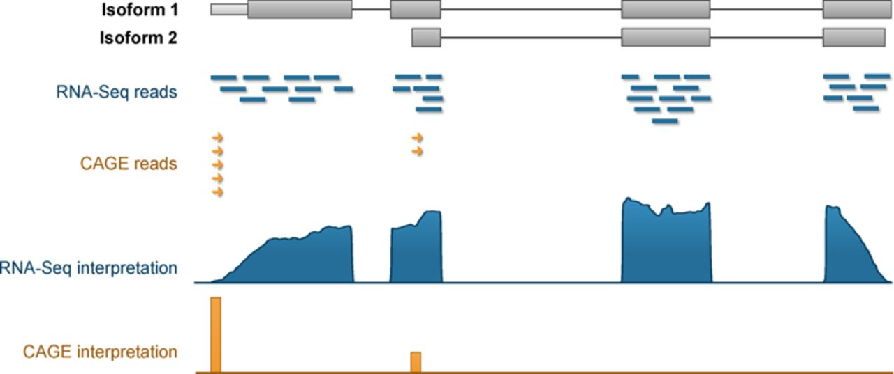
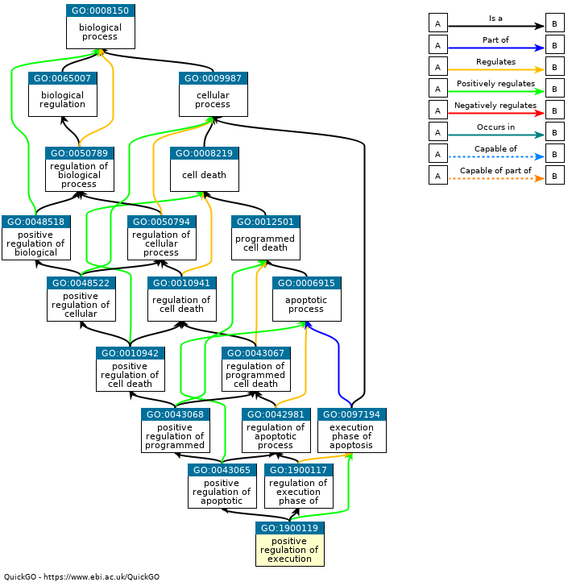
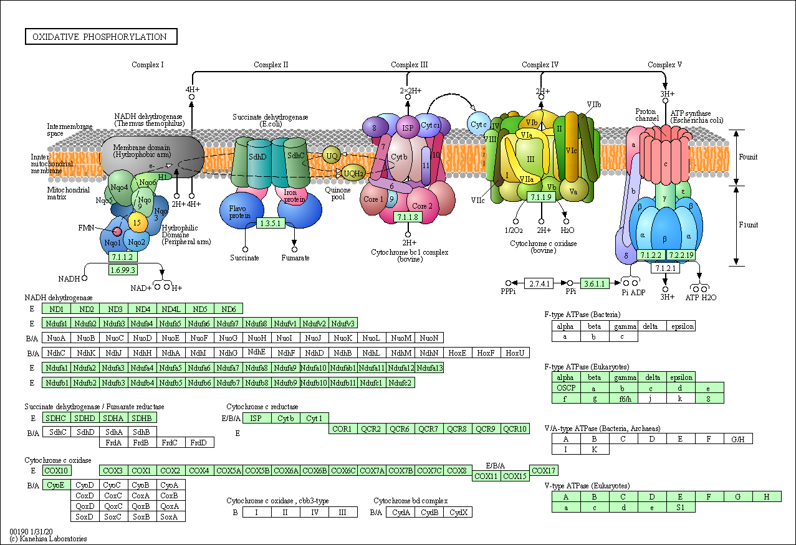

Transcriptomics: Lecture 2
Biotech 7005/Bioinf 3000
Frontiers of Biotechnology: Bioinformatics and Systems Modelling
The University of Adelaide
Frontiers of Biotechnology: Bioinformatics and Systems Modelling
The University of Adelaide
Dr Stevie Pederson (They/Them)
stevie.pederson@thekids.org.au
stevie.pederson@thekids.org.au
Black Ochre Data Labs
The Kids Research Institute Australia
The Kids Research Institute Australia
September 15, 2025
Helpful Links
Welcome To Country
I’d like to acknowledge the Kaurna people as the traditional owners and custodians of the land we know today as the Adelaide Plains, where I live & work.
I also acknowledge the deep feelings of attachment and relationship of the Kaurna people to their place.
I pay my respects to the cultural authority of Aboriginal and Torres Strait Islander peoples from other areas of Australia, and pay our respects to Elders past, present and emerging, and acknowledge any Aboriginal Australians who may be with us today
RNA-Seq
RNA Sequencing
According to Wang, Gerstein, and Snyder (2009)
RNA-Seq, also called RNA sequencing, is a particular technology-based sequencing technique which uses next-generation sequencing (NGS) to reveal the presence and quantity of RNA in a biological sample at a given moment, analyzing the continuously changing cellular transcriptome.
RNA Sequencing
- Microarrays are still published regularly
- Also used extensively for methylation
- RNA sequencing is now the dominant technology
- Strong improvement for:
- transcript-level resolution
- un-annotated genes
- allelic bias
- genomic variants
RNA Sequencing
- Microarrays rely on probes for transcripts defined at design time
- Restricted in the number of transcripts/genes targeted
- Gencode 48 (GRCh38): 78,686 genes + 385,669 transcripts
- Probes capture non-specfic binding
- Affymetrix use 25-mer probes
- Illumina arrays use 60-mer probes \(\implies\) sequences better targeted
These limitations do not exist for RNA-Seq
RNA Sequencing
- Directly sequence the biological material
- Map to most recent reference at any point in time
- Assemble a transcriptome (tissue specific)
- Detect InDels / SNPs in expressed sequences
- Multiple variations
- totalRNA or polyA transcripts \(\implies\) most similar to microarrays
- smallRNA libraries
- Long Reads (Oxford Nanopore, PacBio)
\(\implies\) originally isoform discovery, quantitative methods improving
The RNA Population Of a Eukaryotic Cell

- rRNA \(\approx\) 80%1
- tRNA \(\approx\) 15%
- All other RNA \(\approx\) 5%
The Key Steps
- Focus from here on will be sequencing mRNA using short reads
- Library Preparation
- RNA Quality assessment
- Selecting target molecules
- Adding sequencing primers
- Sequencing
- Aligmnent + Quantitation
- DE Gene Detection
- Downstream Analysis
- (Optional) Nobel Prize
RNA Selection
- Select for poly-adenylated RNA using oligo-dT-based methods
- Only extracts intact mRNA with a polyA tail (includes some ncRNA)

RNA Selection
- Enzymatically deplete rRNA sequences
- rRNA targeted using probes \(\implies\) dsRNA degraded
- Can additionally target hbRNA (whole blood)
Image from https://support.illumina.com.cn
Library Preparation
- RNA is then fragmented and size selected (200-300nt)
- Very short transcripts always lost during this step
- cDNA produced
- Sequencing adapters added
- Indexes are unique to each individual library \(\implies\) always have replicates
- Optionally contain Unique Molecular Identifiers (UMI)
\(\implies\) Helps identify PCR duplicates
- Most RNA-Seq now retains strand-of-origin information (Stranded RNA-Seq)
- During PCR only the first cDNA template retained
Library Preparation
Image courtesy of https://www.lubio.ch/blog/ngs-adapters
Library Preparation
- Each double-stranded cDNA then has the final structure (+UMI)
Image courtesy of https://www.lubio.ch/blog/ngs-adapters
Sequencing
Image taken from https://www.bmkgene.com/dnarna-sequencing-illumina-sequencer-product/
Alignment and Quantitation
Genomic Alignment
- Alignment to a reference genome requires a splice-aware aligner
- A GTF (Gene Transfer File) required when building the index
\(\implies\) Provides all exon-transcript-gene co-ordinates - New Gencode, Ensembl etc releases at regular intervals
- A GTF (Gene Transfer File) required when building the index
- Most common aligners are STAR (Dobin et al. 2013) & hisat2 (Kim et al. 2019)
- Return alignments as a
bamfile
- Return alignments as a
- Aligned reads are then counted to provide gene-level counts
- htseq (Anders, Pyl, and Huber 2014) and featureCounts (Liao, Smyth, and Shi 2014) are very common
- The same GTF should be used as during indexing
Counting Alignments

- Some alignments align beautifully within exon structures
- Some overhang a little
- Unspliced mRNA?
- Some genes are overlapping
- Stranded libraries can resolve
- Maybe bacterial reads span genes within an operon
Gene-Level Counts
- The region encoding a gene is (relatively) well defined
- An alignment within a gene is easy to assign to that gene
- Much more difficult to identify which transcript it came from
- Many transcripts share multiple exons
- Splice Junctions were the earliest approach
Gene-Level Counts
Image taken from Yu et al. (2015)
Transcriptome Alignment
- An alternative is to provide a reference transcriptome
- Alignments no longer need to be splice aware
- Reads can (& commonly do) align to multiple transcripts
- Much faster than traditional alignment
- Pseudo-alignment is used by kallisto (Bray et al. 2016)
- Statistically modelled expression estimates used by salmon (Patro et al. 2017)
- Return transcript-level counts without bam files
- Add transcript-level counts \(\implies\) gene-level counts
Pseudo-Counts
- Salmon counts are actually pseudo counts output by model fitting
- Predicts the proportion of library derived from transcript
- Fitted using EM-algorithm or Bayesian modelling
- Counts bootstrapped to provide uncertainty estimates of prediction
\(\implies\) Measures how confident we are in the transcript-level counts - Transcript-level counts can be scaled by uncertainty estimate (Baldoni et al. 2024) when performing DTE analysis
Differential Gene Expression Analysis
Differential Gene Expression Analysis
- A fundamental question:
Does the overall abundance of a gene differ between experimental conditions?
- Need a statistical approach to answer this question
Count-Based Data
- Under both reference-types \(\rightarrow\) counts represent expression
- These are discrete data (i.e. not continuous values)
- Microarrays were continuous values (fluorescence intensity)
- Modelled using log2-transformed values \(\implies \mathcal{N}(\mu, \sigma)\)
- Linear regression, \(t\)-tests etc
- Mean and variance are independent variables
- Count data is commonly modelled using a Poisson Distribution \(\implies \text{Poisson}(\lambda)\)
- Poisson variance is defined as being equal to the mean i.e. \(\sigma^2 = \mu\)
\(\implies\)Mean and variance are not independent variables
- Poisson variance is defined as being equal to the mean i.e. \(\sigma^2 = \mu\)
Count-Based Data
- In most cases the observed variance is greater than the mean\(\implies\) over-dispersion
- We use the Negative Binomial distribution to model counts for gene \(g\) in sample \(i\)
\[ y_{gi} \sim \text{NB}\left(\mu_{gi}, \sigma^2_g(\mu_{gi} +\phi\mu^2_{gi})\right), \text{where} \phi > 0 \]
- Can be thought of as like a Poisson with extra variation
- Extra variation is strictly defined in quadratic relationship to mean
- Sometimes described as a combination of technical & biological variation
Count-Based Data
- Fit generalised linear models (GLMs) to model counts and estimate logFC
- Implemented in edgeR (Chen, Lun, and Smyth 2016) and DESeq2 (Love, Huber, and Anders 2014)
- Slight differences in handling of over-dispersions
- Both default to FDR-adjusted \(p\)-values
- Same model for transcripts, but dividing counts by uncertainty estimate (Baldoni et al. 2024)
- Can also model transcripts as proportions of gene-level estimates
Count-Based Data
- Poisson/NB-GLMs fit the rate of an event, i.e. counts per fixed measurement window
- Sequencing data produces ‘libraries’ of counts \(\rightarrow\) total counts = library size
- In model fitting \(\rightarrow\) estimate rate as a function of library size
- TMM (edgeR) or RLE (DESeq2) approaches estimate scaling factors
- Moderates the effect of highly expressed genes which dominate library size
- In a perfect world \(\implies\) all scaling factors = 1
- Library size when modelling is multiplied by scaling factors
- The most effective normalisation methods for RNA-Seq
Count-Based Data
- A common alternative measure is counts per million (CPM) or logCPM
- CPM is simply counts divided by (library size / 1,000,000)
- No longer discrete \(\implies\) continuous data
- Relationship between mean and variance still retained for logCPM
- Can’t use naively in classic
limma-based linear models
- Can’t use naively in classic
- The limma-voom method (Law et al. 2014) uses weights to break the mean-variance relationship
- Can then assume normally-distributed data
\(\implies\) slightly more sophisticated and flexible models
- Can then assume normally-distributed data
- Alternatively, the
limma-trendworks effectively
Enrichment Testing

- Often want to identify key pathways associated with results
- Are genes from specific pathways or gene-sets most impacted
- Gene Ontology (GO) Terms:
- Carefully constructed, hierarchical database of terms
- Biological Process, Molecular Function and Cellular Component
Enrichment Testing

- Kyoto Encyclopedia of Genes and Genomes (KEGG):
- Molecular pathways with complete topology
Enrichment Testing
- Often use approaches based on Fisher’s Exact Test
- Compare enrichment of DE genes in a pathway vs not DE Genes in pathway
- NotDE \(\equiv\) Background
- Pathways often share DE genes \(\implies\) biological expertise
- Multiple Testing across 1000s of pathways
| DE Genes | Not DE Genes | %DE | |
|---|---|---|---|
| In Pathway | 10 | 40 | 20% |
| Not In Pathway | 990 | 14000 | 6.7% |
- 20% of pathway is DE vs 6.7% of “not-pathway” genes
Enrichment Testing
- An alternative approach is to use ranked lists
- Gene Set Enrichment Analysis (GSEA)
- No requirement to classify genes as DE or not DE
- Walk along the ranked list of genes increasing score if gene in gene-set
- In the example, begin at the right
- Largest deviation from zero is -ve

Beyond Differential Expression
Transcript Assembly
- With a good reference genome \(\implies\) StringTie will identify novel transcripts
- Very useful in some cancers
- Can alternatively perform a full reference-guided assembly (Trinity)
- Also works with more distantly-related references
- Built a sea-snake venom-gland transcriptome using another snake genome
- Then predicted protein function from sequence homology
- Full de novo reference also possible if not viable reference
Transcript Assembly
- Check Zhipeng’s notes
Long Read Technology
Long Read Technology
Single-Cell Transcriptomics
Single-Cell Transcriptomics
Single-Cell Transcriptomics
Spatial Transcriptomics
Spatial Transcriptomics
Spatial Transcriptomics
References
Anders, Simon, Paul Theodor Pyl, and Wolfgang Huber. 2014. “HTSeq—a Python Framework to Work with High-Throughput Sequencing Data.” Bioinformatics 31 (2): 166–69. https://doi.org/10.1093/bioinformatics/btu638.
Baldoni, Pedro L, Yunshun Chen, Soroor Hediyeh-Zadeh, Yang Liao, Xueyi Dong, Matthew E Ritchie, Wei Shi, and Gordon K Smyth. 2024. “Dividing Out Quantification Uncertainty Allows Efficient Assessment of Differential Transcript Expression with edgeR.” Nucleic Acids Res. 52 (3): e13.
Bray, Nicolas L, Harold Pimentel, Páll Melsted, and Lior Pachter. 2016. “Near-Optimal Probabilistic RNA-Seq Quantification.” Nat. Biotechnol. 34 (5): 525–27.
Chan, Jia Jia, and Yvonne Tay. 2018. “Noncoding RNA:RNA Regulatory Networks in Cancer.” International Journal of Molecular Sciences 19 (5). https://doi.org/10.3390/ijms19051310.
Chen, Yunshun, Aaron T L Lun, and Gordon K Smyth. 2016. “From Reads to Genes to Pathways: Differential Expression Analysis of RNA-Seq Experiments Using Rsubread and the edgeR Quasi-Likelihood Pipeline.” F1000Res. 5 (June): 1438.
Dobin, Alexander, Carrie A Davis, Felix Schlesinger, Jorg Drenkow, Chris Zaleski, Sonali Jha, Philippe Batut, Mark Chaisson, and Thomas R Gingeras. 2013. “STAR: Ultrafast Universal RNA-Seq Aligner.” Bioinformatics 29 (1): 15–21.
Kim, Daehwan, Joseph M Paggi, Chanhee Park, Christopher Bennett, and Steven L Salzberg. 2019. “Graph-Based Genome Alignment and Genotyping with HISAT2 and HISAT-Genotype.” Nat. Biotechnol. 37 (8): 907–15.
Law, Charity W, Yunshun Chen, Wei Shi, and Gordon K Smyth. 2014. “Voom: Precision Weights Unlock Linear Model Analysis Tools for RNA-Seq Read Counts.” Genome Biol. 15 (2): R29.
Liao, Yang, Gordon K Smyth, and Wei Shi. 2014. “featureCounts: An Efficient General Purpose Program for Assigning Sequence Reads to Genomic Features.” Bioinformatics 30 (7): 923–30.
Love, Michael I., Wolfgang Huber, and Simon Anders. 2014. “Moderated Estimation of Fold Change and Dispersion for RNA-Seq Data with DESeq2.” Genome Biology 15: 550. https://doi.org/10.1186/s13059-014-0550-8.
Patro, Rob, Geet Duggal, Michael I Love, Rafael A Irizarry, and Carl Kingsford. 2017. “Salmon Provides Fast and Bias-Aware Quantification of Transcript Expression.” Nat. Methods 14 (4): 417–19.
Wang, Zhong, Mark Gerstein, and Michael Snyder. 2009. “RNA-Seq: A Revolutionary Tool for Transcriptomics.” Nat. Rev. Genet. 10 (1): 57–63.
Yu, Nancy Yiu-Lin, Björn M. Hallström, Linn Fagerberg, Fredrik Ponten, Hideya Kawaji, Piero Carninci, Alistair R. R. Forrest, et al. 2015. “Complementing Tissue Characterization by Integrating Transcriptome Profiling from the Human Protein Atlas and from the FANTOM5 Consortium.” Nucleic Acids Research 43 (14): 6787–98. https://doi.org/10.1093/nar/gkv608.